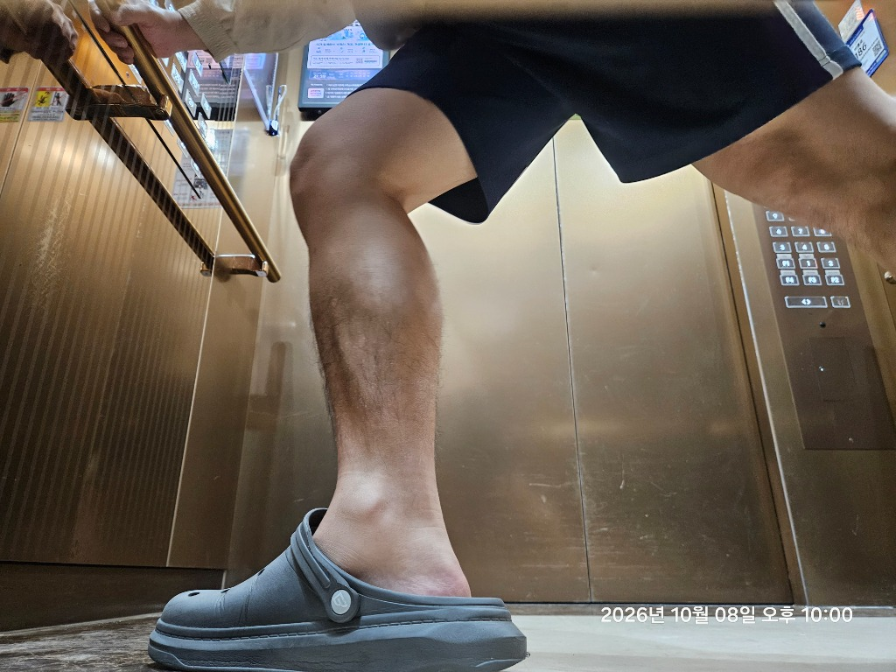

많이 달리고 난 직후 발바닥 근육과 힘줄은 잔뜩 지쳐 뻣뻣해진 상태입니다. 이때 많은 분이 놓치는 '달리기 직후 30분 편한 슬리퍼 갈아신기' 하나가 족저근막염과 아킬레스건 통증을 막는 큰 차이를 만듭니다. 리커버리 슬라이드(회복용 쿠션 슬리퍼)가 단순한 푹신한 실내화가 아니라 발을 지켜주는 도구인 이유를 알아봅니다.

📸 5,000km 러너의 실전 에셋: 10km 달리기를 마친 직후 운동화를 벗고 바로 갈아신는 리커버리 슬라이드. 뒤꿈치를 감싸는 오목한 구조와 발바닥 안쪽 아치를 받쳐주는 모양 덕분에 지친 발바닥의 당김이 한결 편해집니다.
1. 달린 직후 맨발로 걸으면 발바닥이 아파지는 이유
달리는 동안 발바닥 힘줄은 수천 번씩 늘어났다 줄어들며 몸무게의 몇 배나 되는 충격을 받아냅니다. 운동이 끝나고 신발을 벗으면 시원하고 개운하지만, 쿠션이 전혀 없는 맨발로 딱딱한 마루바닥이나 타일을 딛는 순간 지쳐 있던 발바닥에 큰 당김이 한꺼번에 실립니다.
⚠️ "뛸 때는 괜찮았는데, 집에 와서 씻고 걸을 때 아파요"
이미 피로가 쌓여 뻣뻣해진 발바닥으로 평평하고 딱딱한 바닥을 쿵 디디면, 뒤꿈치 뼈에 붙어 있는 힘줄 끝부분에 작은 상처가 생기기 쉽습니다. 이것이 바로 달릴 때보다 집에 돌아와 맨발로 걸을 때 뒤꿈치가 찌릿한 이유입니다.
2. 회복용 쿠션 슬리퍼 vs 일반 평평한 슬리퍼 차이
일반 편의점 슬리퍼나 바닥이 얇은 조리와 달리, 러너용 회복 슬리퍼는 발바닥에 실리는 힘을 고르게 나누어 주도록 만들어졌습니다.
| 비교 항목 | 🩴 회복용 쿠션 슬리퍼 (리커버리 슬라이드) | 🩴 일반 평평한 슬리퍼 / 조리 |
|---|---|---|
| 뒤꿈치 모양 | 오목하게 파인 컵 모양: 뒤꿈치 살을 가운데로 모아 천연 쿠션을 지켜줌 | 완전 평면: 디딜 때마다 뒤꿈치 살이 옆으로 퍼져 뼈에 충격이 감 |
| 발바닥 아치 받침 | 발바닥 안쪽 아치를 볼록하게 받쳐주어 힘줄 당김을 크게 줄여줌 | 받침 없음: 서 있을 때 발 안쪽이 주저앉아 피로가 쌓임 |
| 앞코 모양 | 배 밑바닥처럼 둥글게 들려 있어 발가락에 힘을 주지 않아도 편하게 걸림 | 슬리퍼가 벗겨지지 않게 하려고 걸을 때마다 발가락에 힘을 주게 됨 |
| 발바닥 압력 | 발바닥 전체로 무게가 고르게 퍼져 아픈 곳 압력이 35~40% 줄어듦 | 뒤꿈치와 발볼 앞쪽에 무게가 한꺼번에 쏠림 |
3. 오목한 뒤꿈치 컵이 발뒤꿈치 쿠션을 지켜줍니다
우리 발뒤꿈치 밑에는 충격을 막아주는 도톰한 지방 쿠션이 있습니다. 하지만 딱딱하고 평평한 바닥을 디디면 이 지방이 양옆으로 밀려 퍼지면서 뒤꿈치 뼈가 바닥에 더 가까이 닿게 됩니다.
회복용 쿠션 슬리퍼의 오목한 뒤꿈치 자리는 이 지방 쿠션이 옆으로 퍼지지 않게 그릇처럼 모아줍니다. 그 덕분에 발 고유의 쿠션 두께가 그대로 유지되어 뒤꿈치와 아킬레스건이 훨씬 편해집니다.
4. 실생활에서 편하게 활용하는 3가지 팁
- 자동차 트렁크나 가방에 하나 넣어두기: 공원이나 대회장에서 달리고 난 뒤, 젖고 땀 찬 러닝화를 계속 신고 운전하거나 걷지 말고 바로 슬리퍼로 갈아신으세요.
- 집 안 전용 실내화로 쓰기: 집 바닥이 딱딱한 강마루나 타일이라면, 집 안에서 쿠션 슬리퍼를 신는 것만으로도 아침 첫 발 통증을 크게 줄일 수 있습니다.
- 엄지발가락 사이 끼우는 조리 피하기: 발가락 사이에 끈을 끼우는 조리는 발가락에 자꾸 힘을 주게 만들므로, 발등을 넓고 편하게 감싸는 슬리퍼 형태가 휴식에 더 좋습니다.
🫀 부상 없이 회복하는 내 몸의 안전 심박수는?
무리한 훈련 후 누적된 피로도를 방지하고, 내 몸이 안전하게 젖산을 제거하며 회복할 수 있는 Zone 1 회복 러닝 심박수를 계산해보세요.
🫀 카보넨 정밀 심박존(Zone 1~5) 계산기 실행하기 ›- Hicks, J. H. (1954). The mechanics of the foot: II. The plantar aponeurosis and the arch. Journal of Anatomy, 88(Pt 1), 25-30.
- Jorgensen, U. (1985). Achilles tendonitis and heel fat pad shock absorbing capacity in runners. British Journal of Sports Medicine, 19(4), 197-200.
- Carlson, R. E., et al. (2000). Plantar pressure distribution and custom recovery footwear efficacy in endurance runners. Foot & Ankle International, 21(9), 748-754.